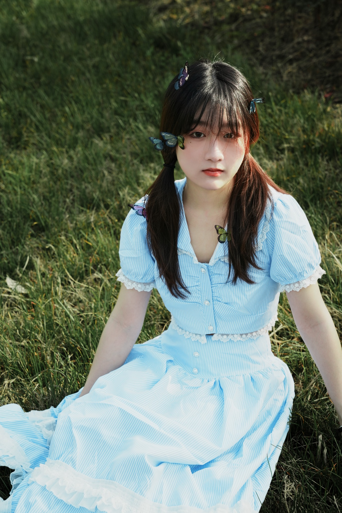
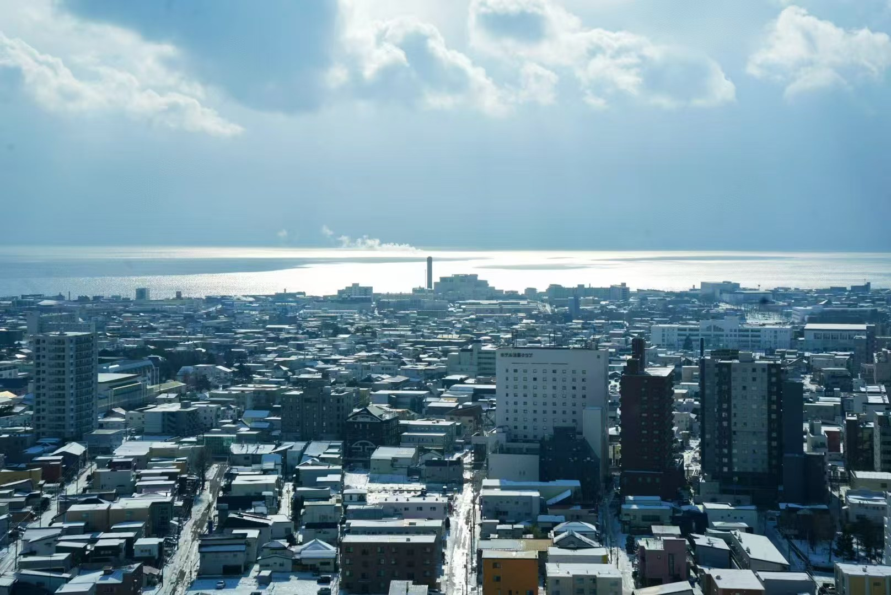
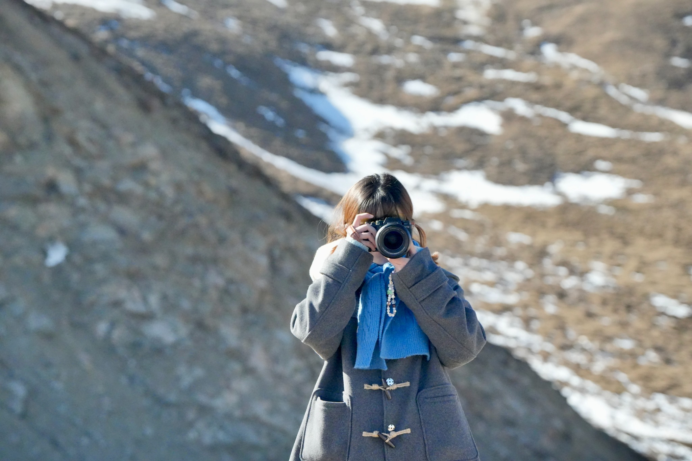
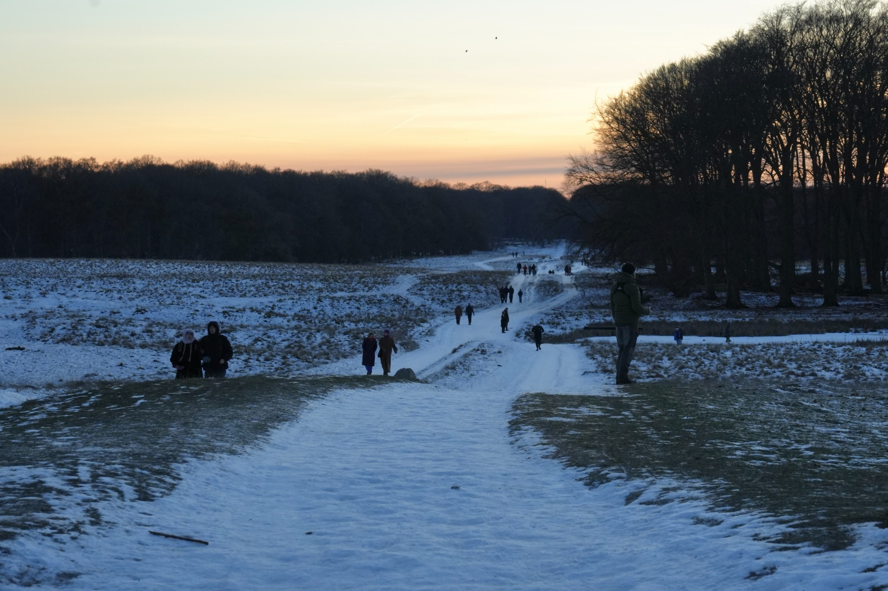
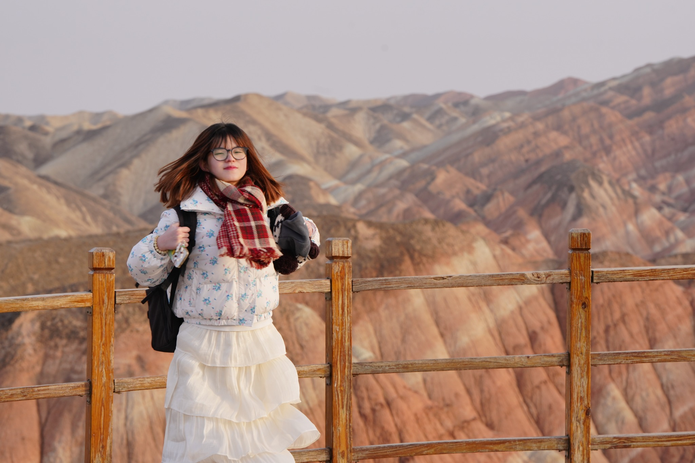
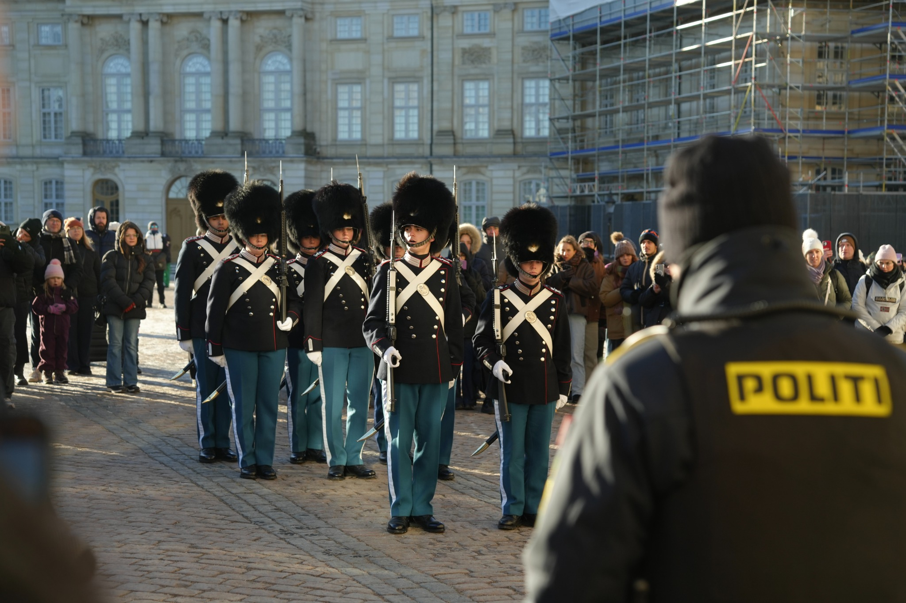
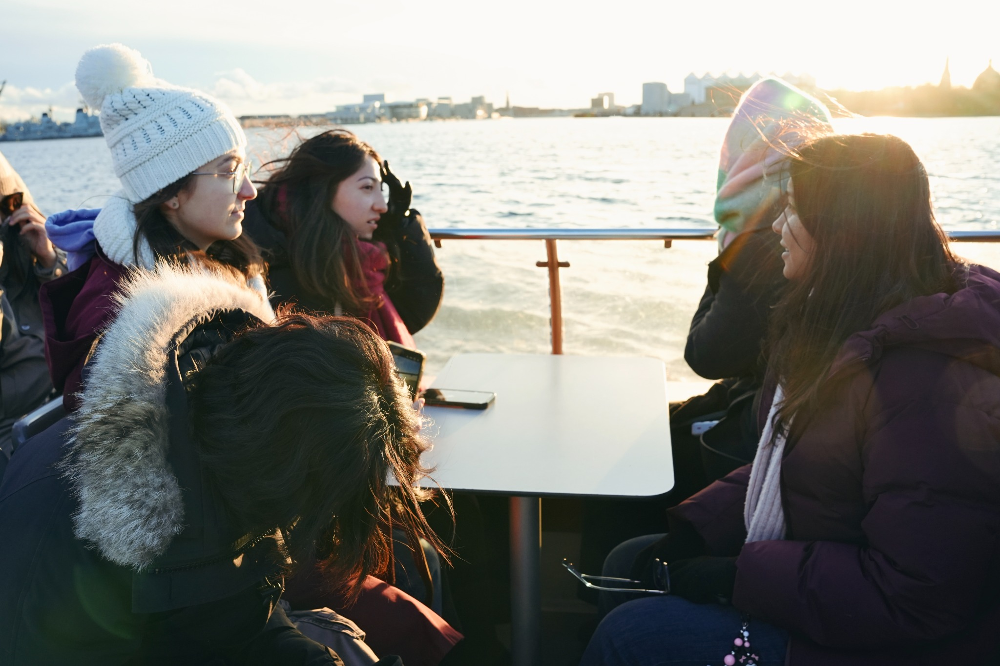
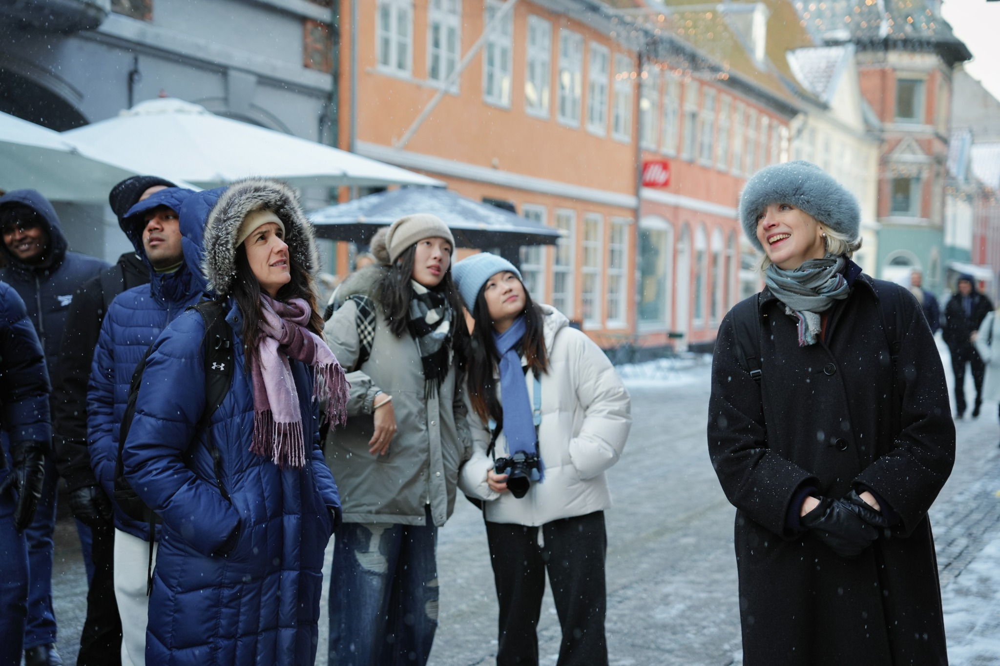

← Home
Visual Practice / Photography
Photography
People, places, and small moments I don’t want to forget.
“Good photos keep a feeling alive.”
People
Portraits / Friends / Everyday

Places
Cities / Nature / A Wider World





Moments
Travel / Candid / The In Between


“A collection of places, people, and moments that make life feel full.”